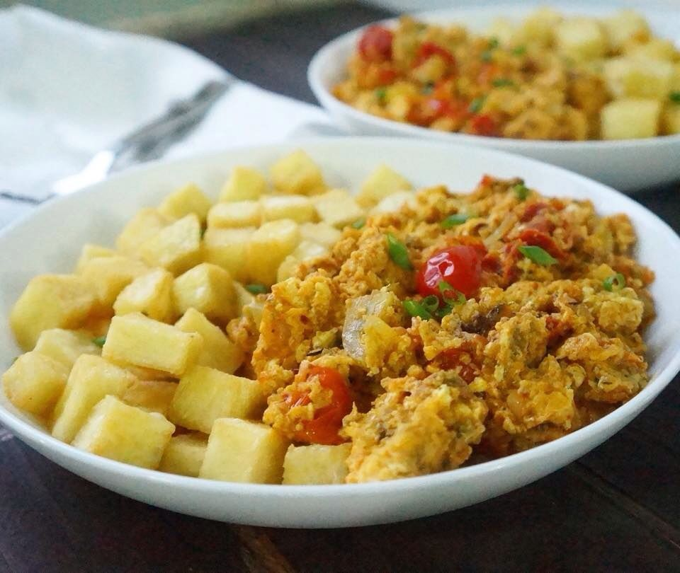

Yam and eggs recipe

Yam and tasty fried eggs
Balance mix of tasty carbs and proteins, also with nessecary fibre, a meal that fills one for the day
Prep time: 15mins
Prep time: 15mins
Cook time: 1hr 5mins
Servings: 6 plates
Ingredients:
- 10 pieces of Yam (Chopped)
- 3 eggs
- Handful chopped spring onion
- 2 tablespoons of Vegetable oil
- Salt to taste
- 1 seasoning cube
- Handful chopped carrots
Directions
- In a pot of boiling water, peel and chop your yam and bring to boil. When yam is soft, season with salt and drain the water.
- In a pan, heat up the oil and stir fry the onions and chopped pepper. Add the tomato and carrots after a minute of frying the onion and pepper on medium heat.
- Add the seasoning and stir fry for another minute.
- In a bowl, whisk your eggs and pour into the frying vegetables. Reduce the heat and allow the eggs cook while stirring it. Increase the heat after a minute and properly stir fry the egg and serve with the yam.
- Enjoy yor dish
Back to the top
Back to the main page